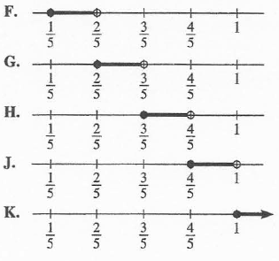

For ACT Students
The ACT is a timed exam...60 questions for 60 minutes
This implies that you have to solve each question in one minute.
Some questions will typically take less than a minute a solve.
Some questions will typically take more than a minute to solve.
The goal is to maximize your time. You use the time saved on those questions you
solved in less than a minute, to solve the questions that will take more than a minute.
So, you should try to solve each question correctly and timely.
So, it is not just solving a question correctly, but solving it correctly on time.
Please ensure you attempt all ACT questions.
There is no negative penalty for a wrong answer.
For JAMB and CMAT Students
Calculators are not allowed. So, the questions are solved in a way that does not require a calculator.
For WASSCE Students
Any question labeled WASCCE is a question for the WASCCE General Mathematics
Any question labeled WASSCE-FM is a question for the WASSCE Further Mathematics/Elective Mathematics
For NSC Students For the Questions:
Any space included in a number indicates a comma used to separate digits...separating multiples of three
digits
from behind.
Any comma included in a number indicates a decimal point. For the Solutions:
Decimals are used appropriately rather than commas
Commas are used to separate digits appropriately.
Attempt all questions.
Use at least two (two or more) methods whenever applicable.
Show all work.
(1.) ACT If $a$ and $b$ are real numbers such that $a \gt 0$ and $b \lt 0$,
then which of the following is equivalent to $|a| - |b|$?
$
F.\:\: |a - b| \\[3ex]
G.\:\: |a + b| \\[3ex]
H.\:\: |a| + |b| \\[3ex]
J.\:\: a - b \\[3ex]
K.\:\: a + b \\[3ex]
$
We shall solve this question using two methods.
If you really do not know how to begin to solve this question, use the first method.
For faster solution because the ACT is a timed test, use the second method.
First Method - Arithmetic method (Test Numbers)
$
a\:\: and\:\: b\:\: are\:\: real\:\: numbers \\[3ex]
a \gt 0, b \lt 0 \\[3ex]
Let\:\: a = 1, b = -1 \\[3ex]
|a| - |b| = |1| - |-1| = 1 - 1 = 0 \\[3ex]
Test \\[3ex]
|a - b| = |1 - (-1)| = |1 + 1| = |2| = 2 \:\: NO \\[3ex]
|a + b| = |1 + (-1)| = |1 - 1| = |0| = 0 \:\: Maybe \\[3ex]
|a| + |b| = |1| + |-1| = 1 + 1 = 2 \:\: NO \\[3ex]
a - b = 1 - (-1) = 1 + 1 = 2 \:\: NO \\[3ex]
a + b = 1 + (-1) = 1 - 1 = 0 \:\: Maybe \\[3ex]
$
So, we are left with two options: $|a + b|$ and $a + b$
Specific to the question, $a$ and $b$ are real numbers.
Their absolute values are also real numbers.
The subtraction of their absolute values should give us real numbers, rather than the absolute
value of real numbers.
In that sense, $a + b$ is a better answer.
Second Method - Algebraic method
$
a\:\: and\:\: b\:\: are\:\: real\:\: numbers \\[3ex]
a \gt 0, b \lt 0 \\[3ex]
$
Be definition
$|a|$ means that $a$ could be positive, zero, or negative.
However, from the question; $a \gt 0 \implies a$ is positive
$|b|$ means that $b$ could be positive, zero, or negative.
However, from the question; $b \lt 0 \implies b$ is negative
This means:
$
|a| - |b| \\[3ex]
= (+a) - (-b) \\[3ex]
= a - (-b) \\[3ex]
= a + b
$
(2.) ACT If $x \lt y$ and $y \lt 4$, then what is the greatest possible integer value of
$x + y$
We shall solve this question using the Arithmetic Method by testing numbers.
We shall use maximum numbers to test.
Student: Why do we have to use "maximum numbers" to test?
Teacher: We shall use "maximum numbers" to test because the question is asking for the
greatest possible integer value
Keep in mind that $x$ and $y$ do not have to be integer values.
But, we are interested in the integer value of their sum
$
\underline{Arithmetic\:\:Method:\:\:Test\:\:Numbers} \\[3ex]
y \lt 4 \\[3ex]
Let\:\: y = 3.9 \\[3ex]
x \lt y \\[3ex]
Let\:\: x = 3.8 \\[3ex]
x + y = 3.9 + 3.8 = 7.7 \\[3ex]
$
Greatest possible integer value = $7$
Student: Why is the greatest possible integer value not equal to $8$?
$
Teacher:\:\: 7.7 \ne 8 \\[3ex]
7.7 \gt 7 \\[3ex]
7.7 \lt 8
$
(3.) NSC Write $5,34$ million as an ordinary number
(5.) ACT For every pair of real numbers $x$ and $y$ such that $xy = 0$ and $\dfrac{x}{y} = 0$,
which of the
following statements is true?
$
A.\:\: x = 0 \:\:and\:\: y = 0 \\[3ex]
B.\:\: x \ne 0 \:\:and\:\: y = 0 \\[3ex]
C.\:\: x = 0 \:\:and\:\: y \ne 0 \\[3ex]
D.\:\: x \ne 0 \:\:and\:\: y \ne 0 \\[3ex]
$
$E.\:\:$ None of the statements is true for every such pair of real numbers $x$ and $y$
$xy = 0$ means that:
Either $x = 0$ OR $y = 0$ OR both $x = 0$ AND $y = 0$
This is known as the Zero Product Property
$\dfrac{x}{y} = 0$ means that $x = 0$
$0$ divided by anything is $0$
However, $y$ cannot be $0$.
Dividing anything by $0$ is undefined.
Combining the two conditions:
$x = 0 \:\:and\:\: y \ne 0$
(13.) CMAT $2\:3\:7\:4\:3\:2\:1\:5\:7\:3\:2\:7\:1\:0\:9\:8\:7\:5\:4\:7\:5\:4\:7\:2\:3$
Find the number of $7$ in the given series that are followed by an even number but are not
preceded by a prime number?
(21.) ACT An integer is abundant if its positive integer factors, excluding the integer
itself, have
a sum that is greater than the integer. How many of the integers 6, 8, 10, and 12 are abundant?
(24.) ACT The difference $\dfrac{3}{5} - \dfrac{-1}{3}$ lies in which of the following
intervals graphed on the real number line?

$
\dfrac{3}{5} - \dfrac{-1}{3} \\[5ex]
= \dfrac{3}{5} - -\dfrac{1}{3} \\[5ex]
= \dfrac{3}{5} + \dfrac{1}{3} \\[5ex]
LCD = 15 \\[3ex]
= \dfrac{9}{15} + \dfrac{5}{15} \\[5ex]
= \dfrac{9 + 5}{15} \\[5ex]
= \dfrac{14}{15} \\[5ex]
= 0.933333333 \\[3ex]
\dfrac{4}{5} = 0.8 \\[3ex]
$
Looking at the options, $\dfrac{14}{15}$ is between $\dfrac{4}{5}$ and $1$
(25.) ACT How many integers, but not including, $20$ and $30$ have a prime factorization with
exactly $3$ factors that are NOT necessarily unique?
(Note: $1$ is NOT a prime number.)
Positive integer divisors of $5 = 1, 5$
Number of positive integer divisors = $2$
Positive integer divisors of $6 = 1, 2, 3, 6$
Number of positive integer divisors = $4$
Positive integer divisors of $12 = 1, 2, 3, 4, 6, 12$
Number of positive integer divisors = $6$
Positive integer divisors of $16 = 1, 2, 4, 8, 16$
Number of positive integer divisors = $5$
Positive integer divisors of $18 = 1, 2, 3, 6, 9, 18$
Number of positive integer divisors = $6$
The correct option is $D.$
(27.) ACT Which of the following arranges the numbers
$\dfrac{9}{5}, 1.\overline{8}, 1.08$, and $1.\overline{08}$
into ascending order?
(Note: The overbar notation shows that the digits under the bar will repeat. For example,
$1.\overline{73} = 1.737373...$)
(28.) ACT Walter recently vacationed in Paris.
While there, he visited the Louvre, a famous art museum.
Afterward, he took a $3.7-kilometer$ cab ride from the Louvre to the Eiffel Tower.
A tour guide named Amélie informed him that $2.5$ million rivets were used to build the tower,
which stands
$320$ meters tall.
When written in scientific notation, the number of rivets used to build the Eiffel Tower is equal to
which of the following expressions?
(29.) ACT Let $a$ and $b$ be real numbers.
If $(a + b)^2 = a^2 + b^2$, it must be true that:
$A.$ either $a$ or $b$ is zero
$B.$ both $a$ and $b$ are zero.
$C.$ both $a$ and $b$ are positive.
$D.$ $a$ is positive and $b$ is negative.
$E.$ $a$ is negative and $b$ is positive.
$
\underline{Prime\;\;Factorization\;\;Method} \\[3ex]
45 = 3 * 3 * 5 \\[3ex]
50 = 2 * 5 * 5 \\[3ex]
84 = 2 * 2 * 3 * 7 \\[3ex]
GCF = 1 \\[3ex]
$
This is because there is no other commom factor of the three numbers.
$1$ is a factor of everything because $1$ * any thing is that thing.
$1$ was not listed in that method because it is not a prime number.
However, $1$ is a factor of those three numbers.
(32.) ACT What is the $358th$ digit after the decimal point in the repeating decimal
$0.\overline{3178}?$
We need a positive integer that can be divided by $3$, $7$, and $9$ without a remainder.
The least possible value of that positive integer is the least common multiple of $3$, $7$, and $9$
(37.) ACT Given consecutive positive integers $a$, $b$, $c$, and $d$ such that $a \lt b \lt c \lt
d$,
which of the following expressions has the greatest value?
We shall solve this question by testing with numbers
I am going to solve by fractions because I would like for you to be comfortable with fractions.
However, you may choose to convert to decimals if you want to.
We need a positive integer that can be divided by $3$, $7$, and $9$ without a remainder.
The least possible value of that positive integer is the least common multiple of $3$, $7$, and $9$
(40.) ACT Which of the following must be true for each set of 4 consecutive positive
integers?
I. At least 1 of the 4 integers is prime.
II. At least 2 of the 4 integers have a common prime factor.
III. At least 1 of the 4 integers is a factor of at least 1 of the 3 other integers.
F. I only G. II only H. I and III only J. II and III only K. I, II, and III
For this question, we have to find a contradiction to each statement.
In other words, we have to try to prove each statement incorrect.
If we cannot, then that is the correct option.
Try to write several examples of $4$ consecutive positive integers
Let us begin with $I.$
$I.$ At least $1$ of the $4$ integers is prime.
Test Case: $32, 33, 34, 35$...these are $4$ consecutive positive integers
As we can see, all $4$ integers are not prime numbers.
They are all composite numbers.
Hence $I.$ is incorrect.
This eliminates three options: $F.$, $H.$ and $K.$
Next is $II.$
$II.$ At least $2$ of the $4$ integers have a common prime factor.
This is a true statement because $4$ consecutive positive integers must include $2$ even integers
$2$ is a prime factor of every even integer
Therefore, two of the four integers must have a common prime factor, and that common prime factor is
$2$
At least two means two or more
So, this statement is true
Then, for $III.$
Using the same example we used for $I.$
Test Case: $32, 33, 34, 35$...these are $4$ consecutive positive integers
$32$ is not a factor of $33$, $34$, or $35$
Neither is any of those integers a factor of any of the other integers.
Hence, this is a false statement.
The only true statement is $II.$
The correct option is $G.$
(47.) ACT Consider all pairs of positive integers w and z whose sum is 5.
For how many values of w does there exist a positive integer x that satisfies both $2^w =
x$ and
$x^z = 64$?
A. 0 B. 2 C. 4 D. 8 E. Infinitely many
$
w, z \gt 0 ...positive\;\;integers \\[3ex]
w + z = 5 \\[3ex]
\underline{Possibilities} \\[3ex]
1 + 4 = 5...eqn.(1) \\[3ex]
4 + 1 = 5...eqn.(2) \\[3ex]
2 + 3 = 5...eqn.(3) \\[3ex]
3 + 2 = 5...eqn.(4) \\[3ex]
But: \\[3ex]
x = 2^w \;\;\;and\;\;\; x^z = 64 \\[5ex]
For:\;\; x^z = 64 \\[3ex]
Possibilities\;\;are: \\[3ex]
2^6 = 64 \;\;\;or\;\;\; 4^3 = 64\;\;\;or\;\; 8^2 = 64 \\[3ex]
\implies \\[3ex]
z = 6 \;\;\;or\;\;\; z = 3 \;\;\;or\;\;\;\; z = 2 \\[3ex]
z\;\;cannot\;\;be\;\;equal\;\;to\;\; 6...Possibilities \\[3ex]
\therefore z = 3 \;\;\;or\;\;\;\; z = 2 \\[5ex]
\implies w = 2 \;\;\;or\;\;\; w = 3...eqn.(3)\;\;\;and\;\;eqn.(4) \\[3ex]
$
There are two values of w that satisfies oth $2^w = x$ and $x^z = 64$
You may ask students to find the values of x
(48.) ACT What is the least common multiple of 50, 30, and 70?
The colors besides red indicate the common factors that should be counted only one time.
Begin with them in the multiplication for the LCM.
Then, include the rest.
The colors besides red indicate the common factors that should be counted only one time.
They are the only ones to be included in the calculation of the GCF.
The colors besides red indicate the common factors that should be counted only one time.
Begin with them in the multiplication for the LCM.
Then, include the rest.
(54.) ACT The solution to the equation $3d + 17 = 13$ is which of the types of numbers listed
below?
I. Rational
II. Irrational
III. Positive
IV. Negative
V. Integer A. I and III only B. I and IV only C. II and III only D. II and IV only A. I, III, and V only
$
3d + 17 = 13 \\[3ex]
3d = 13 - 17 \\[3ex]
3d = -4 \\[3ex]
d = -\dfrac{4}{3} = 1.33\overline{3} \\[5ex]
$
d is a rational number because it is a repeating decimal d is not irrational because it is rational d is negative d is not positive because it is negative d is not an integer because it is a fraction that can be expressed as a repeating decimal
B. I and IV only
(55.)
(56.) ACT Two whole numbers have a greatest common factor of 6 and a least common multiple of 36.
Which of the following pairs of whole numbers will satisfy the given conditions?
Test each option
Option F. 4 and 9
6 is not a factor of either 4 or 9...NEXT
Test each option
Option G. 9 and 12
6 is not a factor of 9...NEXT
Test each option
Option H. 12 and 15
6 is not a factor of 15...NEXT
Test each option
Option J. 12 and 18
6 is a factor of both
Find the LCM
The colors besides red indicate the common factors that should be counted only one time.
Begin with them in the multiplication for the LCM.
Then, include the rest.
(58.) ACT If x and y are positive integers such that the greatest common factor of
$x^2y^2$ and
$xy^3$ is 45, then which of the following could y equal?
First, let us find the GCF of $x^2y^2$ and $xy^3$
The colors besides red indicate the common factors that should be counted only one time.
They are the only ones to be included in the calculation of the GCF.
$
x^2y^2 = \color{black}{x} * x * \color{darkblue}{y} * \color{purple}{y} \\[3ex]
xy^3 = \color{black}{x} * y * \color{darkblue}{y} * \color{purple}{y} \\[5ex]
GCF = \color{black}{x} * \color{darkblue}{y} * \color{purple}{y} \\[3ex]
GCF = xy^2 \\[3ex]
GCF = 45 \\[3ex]
\implies \\[3ex]
xy^2 = 45 \\[3ex]
$
Note: $y$ must be squared in order to compute the GCF
Let us analyze each option A. 45
45 is the GCF
This option is incorrect
B. 15
This is also incorrect because the square of 15 is greater than 45
C. 9
This is incorrect because the square of 9 is greater than 45
D. 5
This is incorrect because even if we square 5, which gives 25; there is no positive integer whose
product with
25 gives 45
$
Assume\;\; y = 5 \\[3ex]
y^2 = 5^2 = 25 \\[3ex]
x * 25 = 45 \\[3ex]
$
$x$ should be a positive integer, but it is not. It is a decimal. So, this option is incorrect.
E. 3
$
Assume\;\; y = 3 \\[3ex]
y^2 = 3^2 = 9 \\[3ex]
x * 9 = 45 \\[3ex]
$
This option is correct.
(59.)
(60.) ACT Let a, b, c and d be real numbers.
Given that ac = 1, $\dfrac{b + c}{d}$ is undefined, and abc = d, which of the following
must be
true?
$
A.\;\; a = 0 \;\;or\;\;c = 0 \\[3ex]
B.\;\; a = 1 \;\;and\;\; c = 1 \\[3ex]
C.\;\; a = -c \\[3ex]
D.\;\; b = 0 \\[3ex]
E.\;\; b + c = 0 \\[3ex]
$
$\dfrac{b + c}{d}$ is undefined implies that $d = 0$
Because division by zero gives undefined
$
abc = d \\[3ex]
abc = 0 \\[3ex]
ac * b = d \\[3ex]
ac = 1 \\[3ex]
\implies \\[3ex]
1 * b = 0 \\[3ex]
b = 0 \\[3ex]
$
The value of b must be zero
The colors besides red indicate the common factors that should be counted only one time.
Begin with them in the multiplication for the LCM.
Then, include the rest.
The colors besides red indicate the common factors that should be counted only one time.
Begin with them in the multiplication for the LCM.
Then, include the rest.
(72.) ACT The least common multiple (LCM) of 2 numbers is 216.
The larger of the 2 numbers is 108.
What is the greatest value the other number can have?
Because the ACT is a timed test, my advice in solving this question is to begin with the highest
number
Why? Because the question is asking for the greatest value.
Begin with the highest number and if it does not work, try the next higher number, and keep going
that way through
the options.
The highest number = 72
So, let us find the LCM of 108 and 72
The colors besides red indicate the common factors that should be counted only one time.
Begin with them in the multiplication for the LCM.
Then, include the rest.
The colors besides red indicate the common factors that should be counted only one time.
Begin with them in the multiplication for the LCM.
Then, include the rest.
(80.) ACT While doing a problem on his calculator, Tom meant to divide a number by 2, but instead
he
accidentally multiplied the number by 2.
Which of the following calculations could Tom then do to the result on the calculator screen to obtain
the result he
originally wanted? A. Subtract the original number B. Multiply by 2 C. Multiply by 4 D. Divide by 2 E. Divide by 4
A good approach to solve this question is to assume a number
Say, the number that Tom wanted to divide by 2; is 6
6 divided by 2 is 3
But accidentally; Tom did: 6 * 2 = 12
So, the question is asking us:
What could Tom do to the result on the calculator screen to obtain the result he originally
wanted?
He originally wanted to divide 6 by 2 to get 3
This means that he originally wanted to get 3
So, in other words, what could Tom do to 12 in order to get 3?
(84.) ACT Which of the following statements is true about rational and/or irrational numbers?
F. The product of any 2 irrational numbers is irrational. G. The quotient of any 2 irrational numbers is rational. H. The product of any 2 rational numbers is irrational. J. The quotient of any 2 rational numbers is irrational. K. The sum of any 2 rational numbers is rational.
Let us analyze each option.
Let us use some examples. We may change these examples if needed.
Let the two rational numbers be: $5$ and $\dfrac{3}{5}$
Let the two irrational numbers be: $\sqrt{2}$ and $\sqrt{2}$
(88.) ACT Given real numbers a, b, c, d, and e such that c < d,
e < c, e > b, and b > a, which of these numbers is
the greatest?
$
A.\;\; a \\[3ex]
B.\;\; b \\[3ex]
C.\;\; c \\[3ex]
D.\;\; d \\[3ex]
E.\;\; e \\[3ex]
$
$
1st:\;\; c \lt d \rightarrow d \gt c \\[3ex]
2nd:\;\; e \lt c \rightarrow c \gt e \\[3ex]
\implies d \gt c \gt e \\[3ex]
3rd:\;\; e \gt b \\[3ex]
4th:\;\; b \gt a \\[3ex]
\implies \\[3ex]
d \gt c \gt e \gt b \gt a \\[3ex]
$
Therefore, the greatest of the numbers is d
(89.)
(90.)
(91.)
(92.) ACT If n is a positive integer, which of the following expressions must be an odd
integer?
Let us analyze each option.
We shall use several exmaples NOTE:n is a positive integer
Let us test each option with two values of n: 2 and 3
If any of the values does not give an odd integer, move on to the next option.
$
\underline{Option\;F} \\[3ex]
n = 2 \\[3ex]
3^n = 3^2 = 9 \\[3ex]
n = 3 \\[3ex]
3^n = 3^3 = 27 \\[3ex]
9\;\;and\;\;27\;\;are\;\;odd\;\;integers \\[3ex]
OKAY \\[5ex]
$
You may stop here because this is the correct option.
However, for teaching purposes; let us test the remaining options.
The colors besides red indicate the common factors that should be counted only one time.
Begin with them in the multiplication for the LCM.
Then, include the rest.